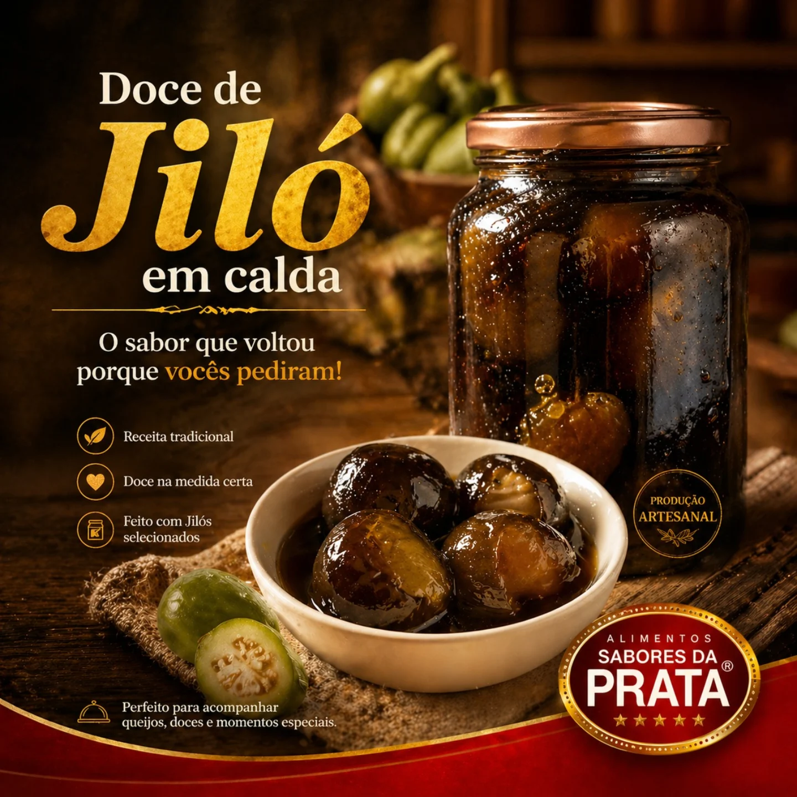
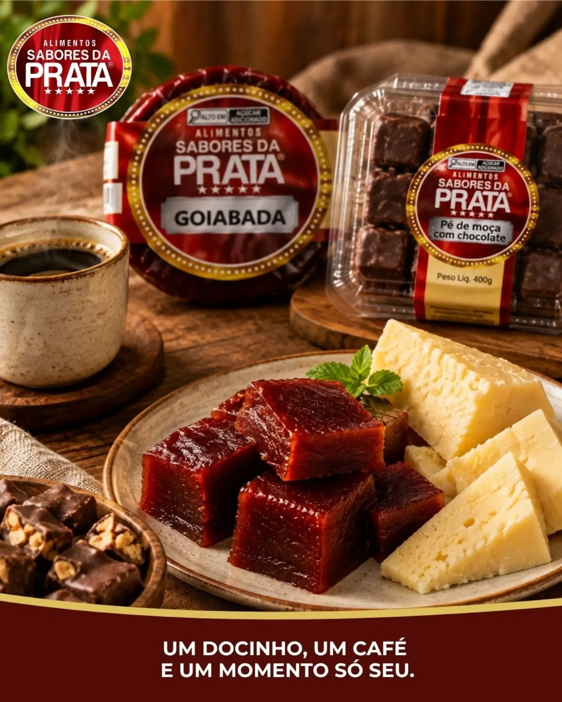
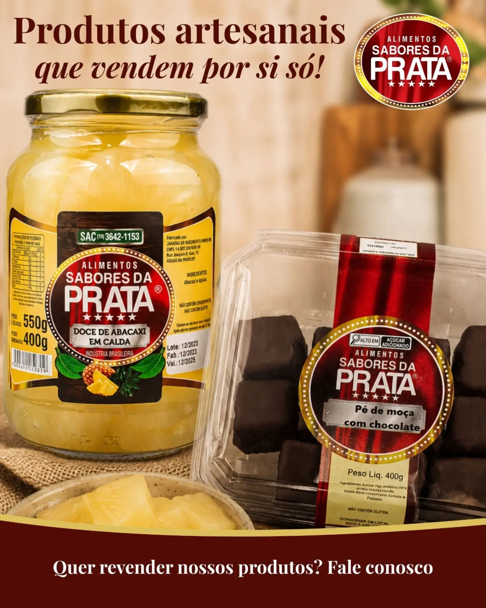
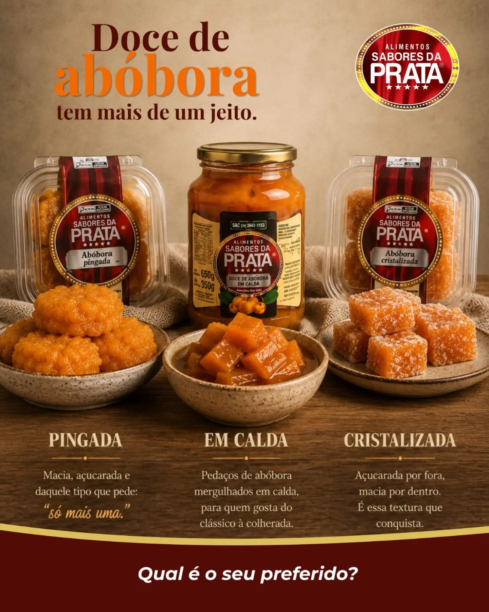
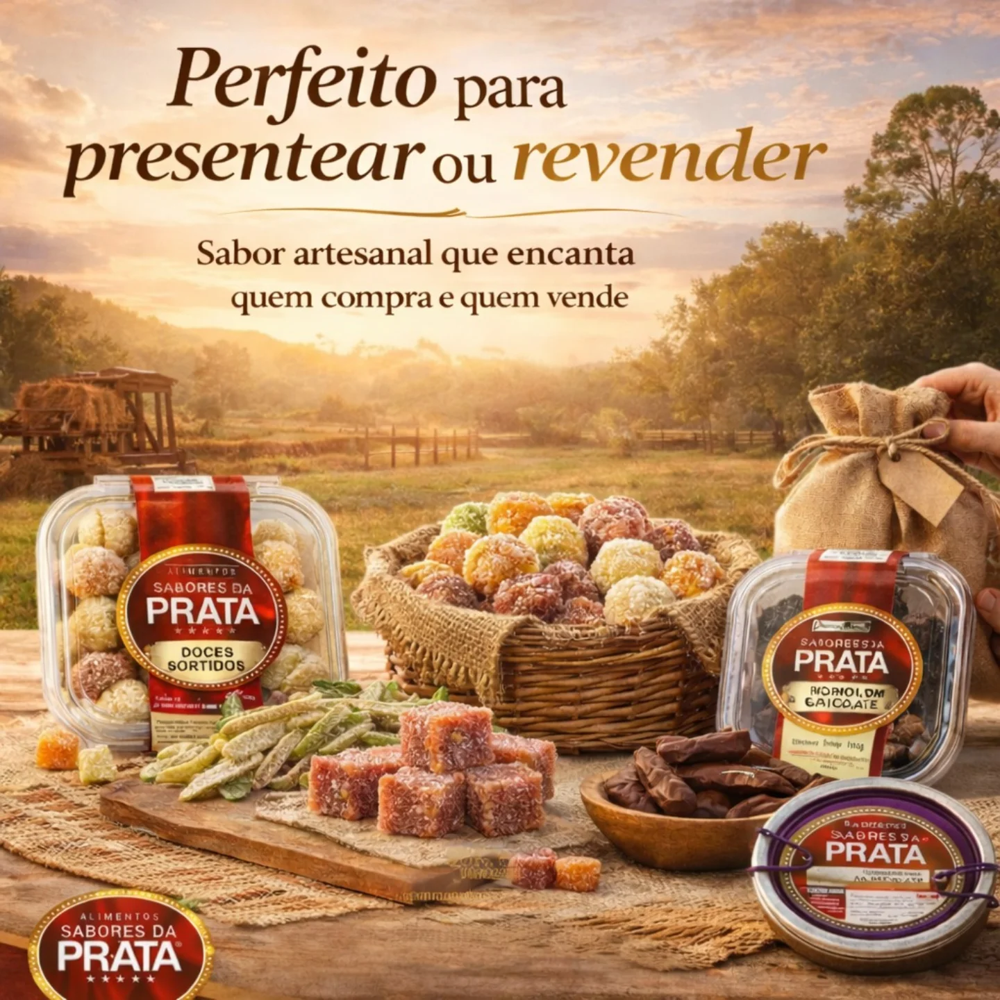
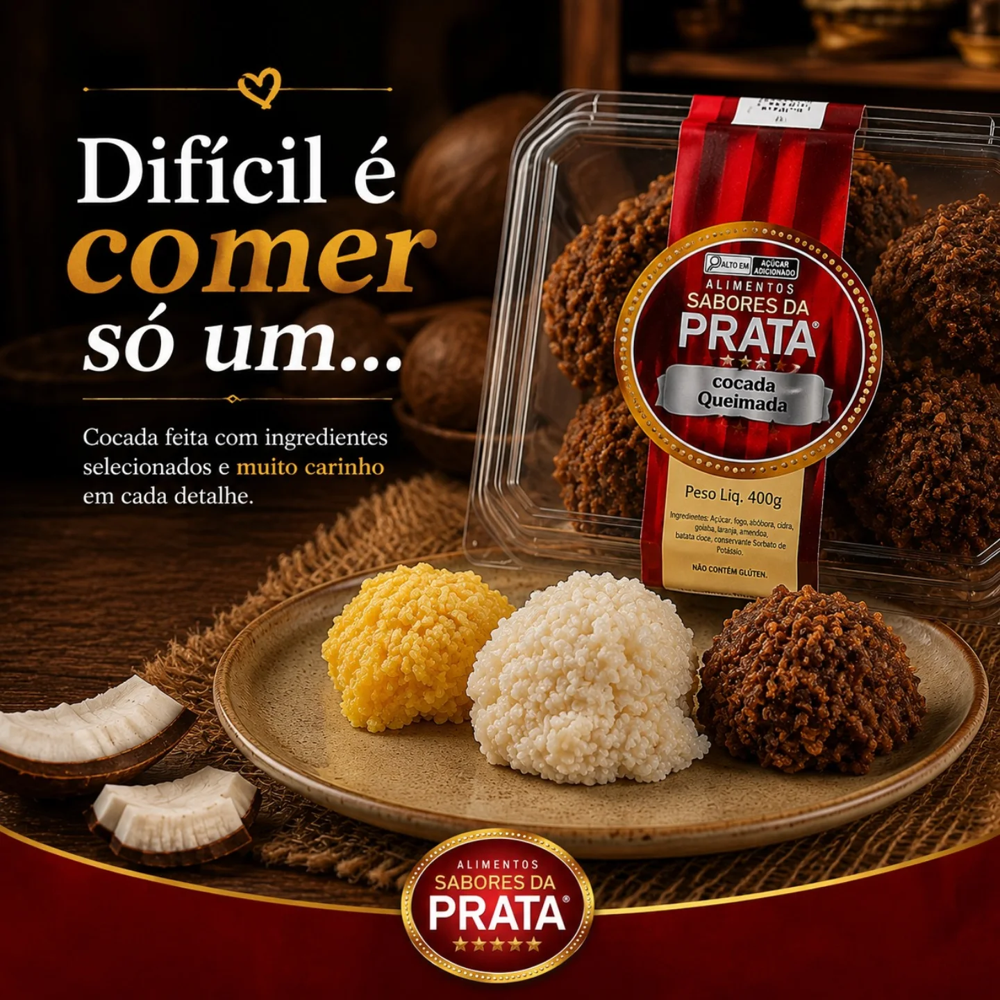

Doces sortidos
O doce de jiló em calda é daqueles sabores que marcam... diferente, autêntico e cheio de história.
Fábrica de doces artesanais · interior de São Paulo · Águas da Prata
Mais de 20 sabores com tradição e história — doces em ponto de colher, embalados com carinho para sua loja, empório ou para o seu presente.
Variedade — nunca a mesma prateleira duas vezes
Regularidade — reposição garantida
Procedência — receita e origem que você conhece
Uma seleção pensada para quem compra e para quem vende — do ponto de café ao empório de bairro.

O doce de jiló em calda é daqueles sabores que marcam... diferente, autêntico e cheio de história.

Corte firme, receita tradicional. Ótima acompanhada de queijo.

Clássico do interior, banhado em chocolate meio amargo, junto de outra especiaria classica.

Em calda ou cristalizado, com aquele ponto de canela.

Cada doce carrega cuidado, tradição e uma história real por trás de cada receita.

Coco fresco ralado na hora, crocante por fora e macia por dentro.
* Fotos ilustrativas — substitua pelos produtos reais antes de publicar.
Espelhando as avaliações reais da nossa página no Google Maps.
★★★★★"Doce de leite que lembra o da minha avó. Comprei pra revender e os clientes já pedem mais."
— Cliente
★★★★★"Entrega certinha, embalagem caprichada. Fechei parceria pro meu empório."
— Cliente
★★★★★"Sabor de doce de fazenda, sem conservante estranho. Virou presente fixo aqui em casa."
— Cliente
* Depoimentos de exemplo — substitua pelos textos reais das avaliações.
Ver todas as avaliações dos nossos clientes| Seg. a Sex. | 08h às 18h |
|---|---|
| Sábado | 08h às 13h |
| Domingo | Fechado |
* Endereço e horários de exemplo — atualize com os dados reais da loja.